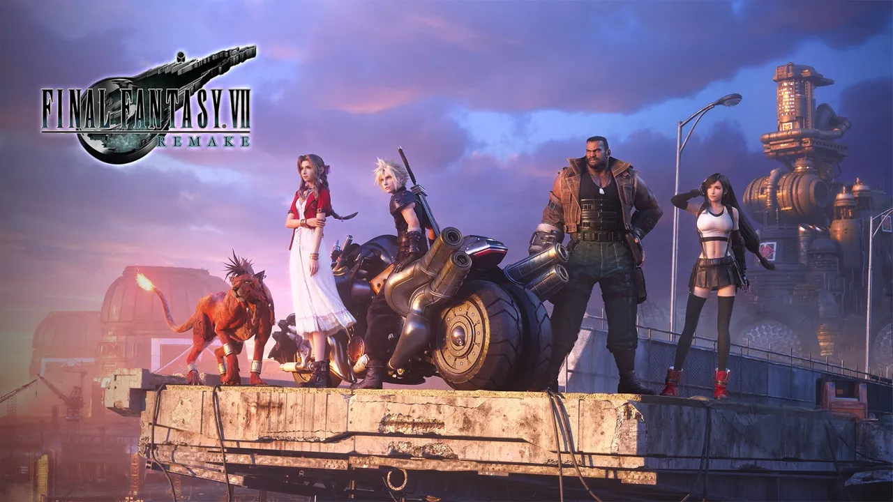
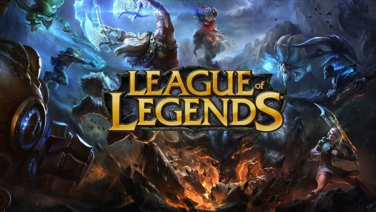
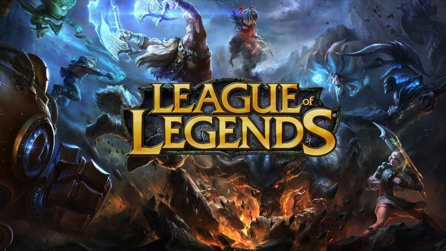

Video Games
Yuna's strength, kindness, modesty, and bravery have made her one of my favorite characters in the Final Fantasy series.
My Game Journey
Since I was a child, I have loved playing video games. Up to now, I have played many games, such as "Super Mario Bros.," "Adventure Island," and "Final Fantasy II" on the FC; "Crisis Core: Final Fantasy VII" on the PSP; "Final Fantasy IX" on the PS; "Final Fantasy X" on the PS2; "Final Fantasy XV," "God of War," "Gravity Rush," "Bloodborne," "Persona 5," and "The Last of Us" on the PS4; "Final Fantasy XVI," "The Last of Us Part II," and "Final Fantasy VII Rebirth" on the PS5; and "League of Legends," "QQ Speed," "Stardew Valley," and "Cyberpunk 2077" on the PC.
My favorite game series is Final Fantasy. I first encountered this series in the fourth grade of elementary school when I played Final Fantasy II. During my childhood, this was the first game with a rich storyline that I ever played, and I was moved to tears when the first character sacrificed himself. For a long time, my dream has been to create a game like this.
Throughout my life, many people have told me that video games have negative effects. However, in my heart, a good video game is always a work of art. It embodies the ninth art, seamlessly integrating elements from the other eight: music, painting, cinema, architecture, sculpture, literature, photography, and performing arts.
Photos


 
